12.11.1 Column graph
Column chart is among the most commonly used types of charts. Use Column graph in esProc to plot a column chart. Take the following plotting algorithm as an example:
|
|
A |
|
1 |
=canvas() |
|
2 |
=demo.query("select * from FRUITS") |
|
3 |
=A1.plot("GraphColumn","categories":A2.(NAME),"values":A2.(UNITPRICE)) |
|
4 |
=A1.draw@p(400,250) |
You can see that the algorithm becomes much simpler with the ready-made column graph. It is unnecessary to plot chart elements, like axes, a figure, legend, and titles, that are components of a chart one by one. A1 creates a canvas and A2 retrieves the data for chart plotting:

A3 plots a column chart:
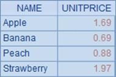
You only need to set data properties of Categories and Values to plot the chart. Here¡¯s A4¡¯s plotting result:
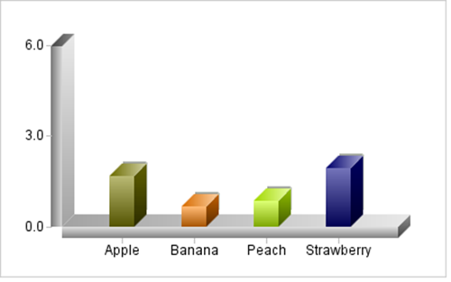
Using ready-made graphs is convenient by setting fewer parameters. Yet they produce fixed plotting styles. You can adjust the plotting effect by modifying the chart parameters, some of which, such as title text, axis color and legend properties, are shared by all the ready-made graphs.
First let¡¯s look at the title text setting for the horizontal and vertical axes. Modify A3 into
=A1.plot("GraphColumn","categories":A2.(NAME),"values":A2.(UNITPRICE),"xTitle":"Fruits","xTitleFont":"Vivaldi","xTitleSize":16,"xTitleColor":-16764007,"yTitle":"Unit Price","yTitleFont":"Vivaldi","yTitleSize":16, "yTitleColor":-16737946,"yTitleAngle":90) to change the properties of column graph:
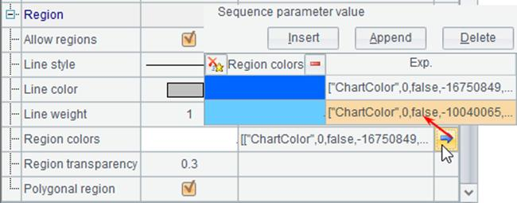
Titles are added for both the horizontal axis and vertical axis beside data labels. Thus A4¡¯s plotting result is:
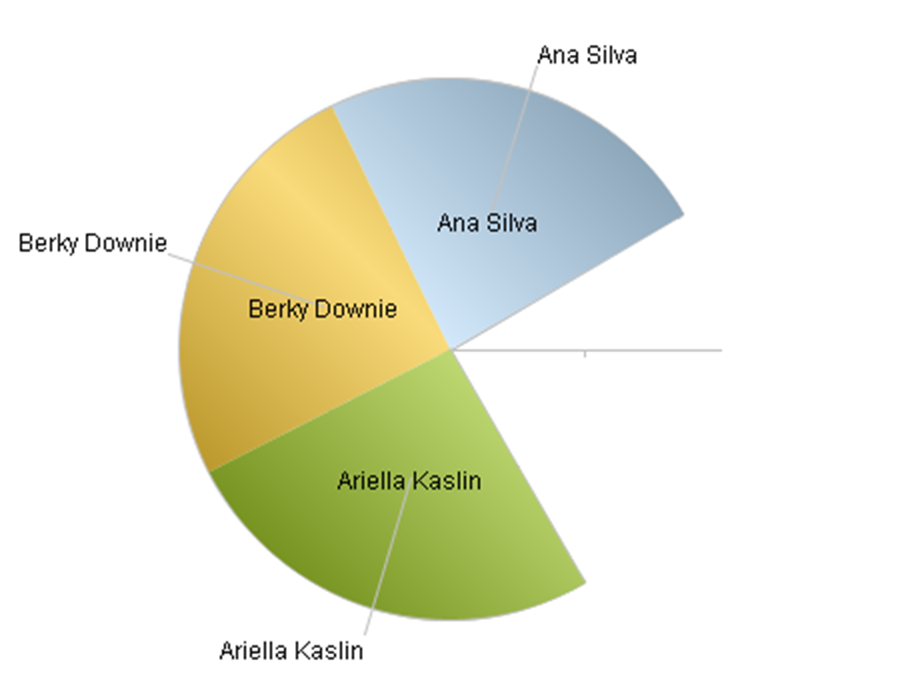
Modify properties of x-axis labels of the column graph:
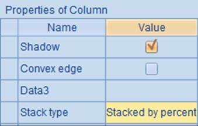
Font and color are changed and A4¡¯s plotting result becomes this:

The font properties of labels are similar to properties of titles, only with an extra Interval for displaying labels at certain interval.
The vertical axis of a column graph is a numeric axis, for which you can set font properties of labels as well as change value range, number of marks, and so on. Modify properties of y-axis labels:
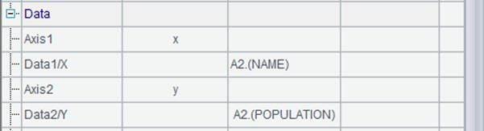
By doing so A3¡¯s code is:
=A1.plot("GraphColumn","categories":A2.(NAME),"values":A2.(UNITPRICE),"xTitle":"Fruits","xTitleFont":"Vivaldi","xTitleSize":16,"xTitleColor":-16764007,"yTitle":"Unit Price","yTitleFont":"Vivaldi","yTitleSize":16,"yTitleColor":-16737946,"yTitleAngle":90,"xLabelFont":"Georgia",
"xLabelColor":-16764007,"yLabelFont":"Georgia","yLabelColor":-16737946, "yEndValue":5,"yMinMarks":5). And A4¡¯s plotting result is:
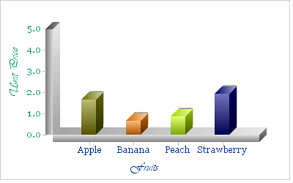
On the numeric y-axis, you can plot grid lines and the warning line. Grid lines are reference lines plotted according to tick marks. The warning line is plotted according to a specified warning value. Modify column graph properties as follows:
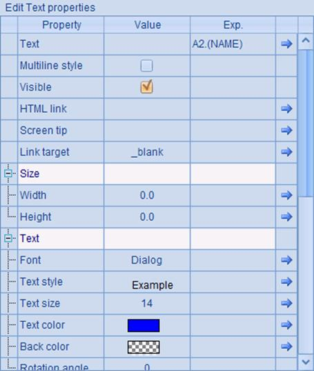
Here¡¯s A4¡¯s plotting result, on which you can see the grid lines and the warning line:
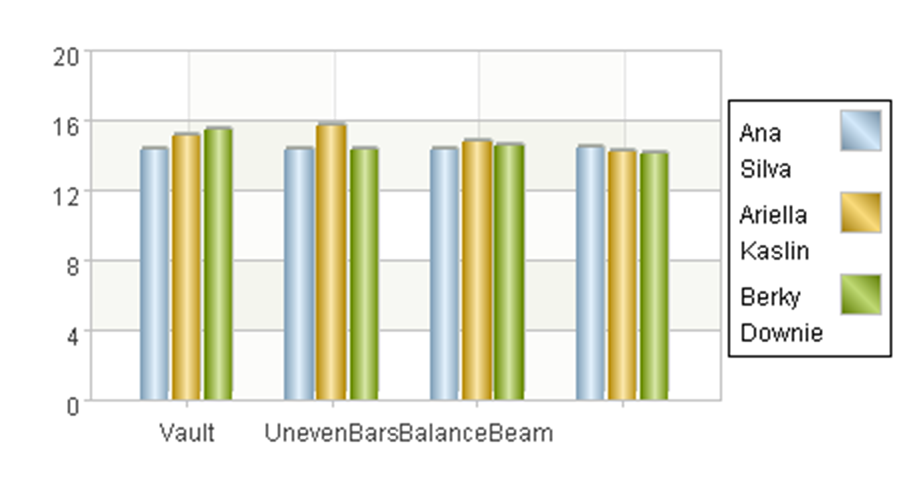
Change the axis color by modifying A3¡¯s chart parameters:
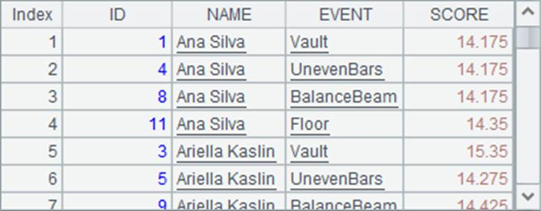
This way the axis color will change accordingly. A4¡¯s plotting result is:

Besides, you can modify Border properties to change the graph outline; or modify Graph title properties to plot a title on the top of the graph. Modify column graph properties through A3:
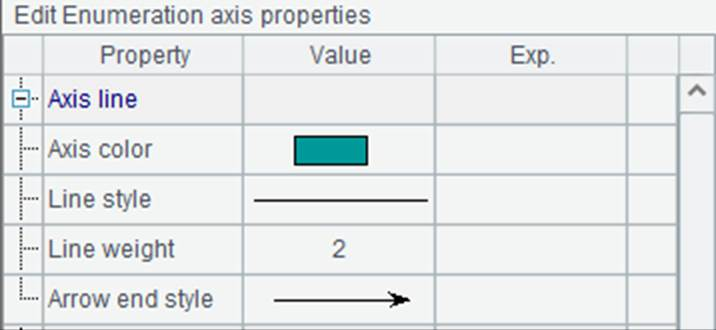
And you get the following plotting result:
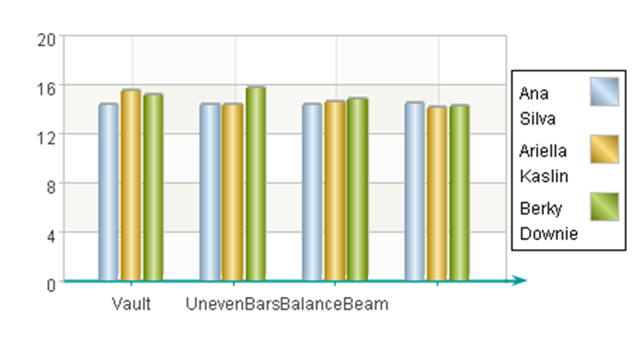
Add data markers on the top of each column by modifying column graph¡¯s Data marker properties:
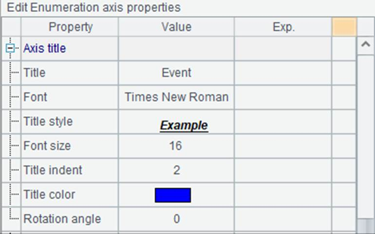
Choose to display the initial data values and data markers will be added to each column. Below is the plotting result:

With a ready-made graph, set Legend properties to plot a legend:

Then the plotting result is:
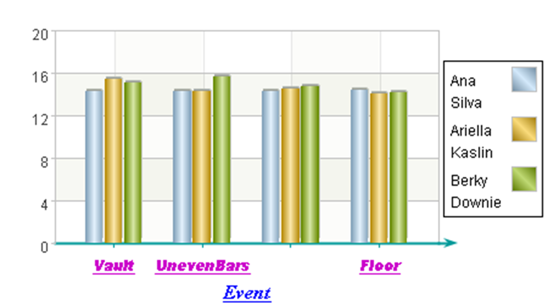
Modify A3¡¯s chart parameters to change chart area color, allow text overlapping or not, and set other properties:
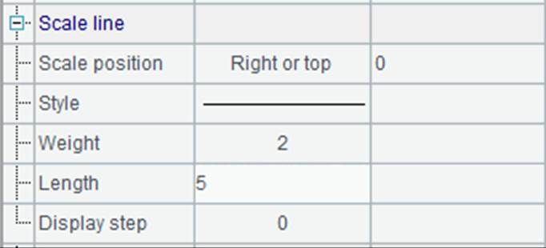
The modification involves setting Canvas color (of chart area), Back color (of the plane) and Legend border color (of legend outline), as well as changing Allow text overlapping to false, which means not plotting text if it may overlay the existing text, such as the Strawberry label on the horizontal axis in the above chart. Here¡¯s A4¡¯s plotting result:
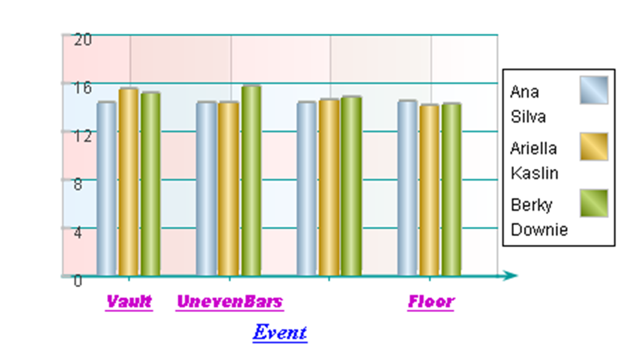
These chart properties can be set not only for column graphs, but also for all other ready-made graphs. Here the property setting for them will be omitted.
Furthermore, the column graph can be used to plot a column chart with category and series, a column chart showing gym scores, for example:
|
|
A |
|
1 |
=canvas() |
|
2 |
=demo.query("select * from GYMSCORE") |
|
3 |
=A1.plot("GraphColumn","categories":A2.(NAME+","+ EVENT),"values":A2.(SCORE)) |
|
4 |
=A1.draw@p(400,250) |
A2 retrieves data for chart plotting:
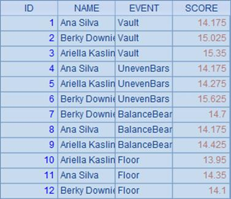
A3 sets properties for the column chart:
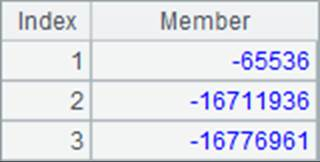
Like setting properties for an enumeration axis discussed in Coordinate Axes, setting Categories data for a column chart with both category and series should include both category value and series value. Here NAME is set as the category and EVENT set as the series. By default each category will be plotted as a cluster of columns of series. Below is A4¡¯s plotting result:
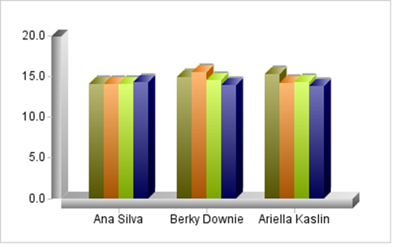
Set Column type as Stacked Column to convert the column chart easily to a two-dimensional stacked column chart:
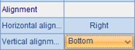
And the plotting result is:
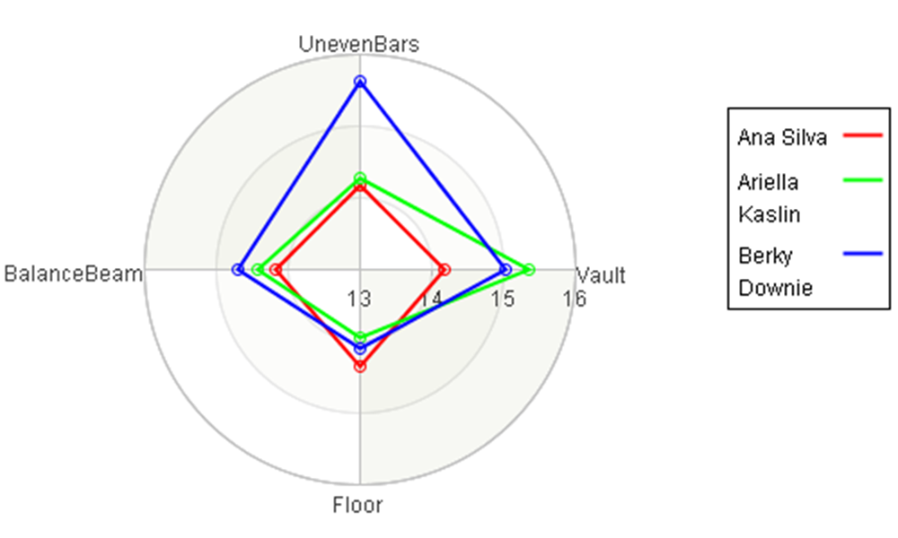
After converting to a two-dimensional chart, the 3D axes become normal lines. By changing column type, you can use the column graph to plot a 3D stacked column chart, bar chart and many other charts.